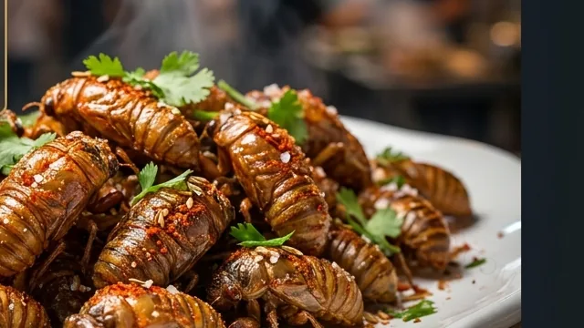

?
Next Chapter
The Insect Atlas
Silkworm pupa, bamboo worms, and every other edible insect Chinese cuisine has been cooking for centuries — mapped, explained, and eaten properly.
Cicada Nymphs Guide
Start with the quick explanation, follow the full 17-year hunt from soil to street food, or go full food-science mode.

Start Here
The friendly overview: what Fried Cicada Nymphs are, why they're one of China's most anticipated summer delicacies, which rumors are wrong, and how to eat your first one.

Visual Story
A scrollable journey from soil to street food: the seventeen-year underground preparation, the brutal harvest window, the 180°C science, the four ways to finish, and the final verdict.

Deep Dive
The Maillard reaction, the self-basting fat layer, protein setting at 180°C, and why seventeen years of underground preparation produces one perfect snack.
Next Chapter
Silkworm pupa, bamboo worms, and every other edible insect Chinese cuisine has been cooking for centuries — mapped, explained, and eaten properly.